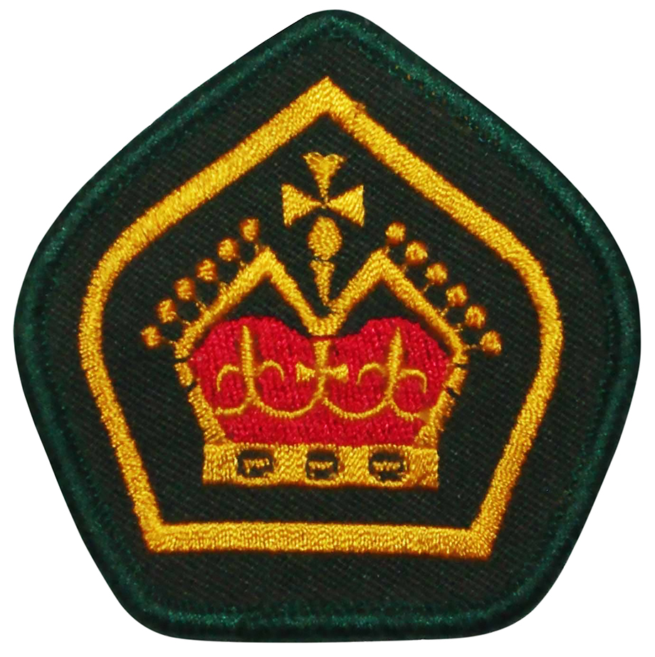

Bachelor of Technology (Computer Systems and Networking)
2019 - Expected completion early 2022
| Cisco Certified Network Associate | 2021 |
| Amazon Web Services Foundations | 2021 |
Information Technology Internship |
2021 | Eilbeck Cranes, Bassendean, Western Australia |
| Explain skills for Eilbeck here | ||
Teacher of Swimming and Water Safety |
2019 - Present | Department of Education Western Australia |
Explain skills for swimming teaching here
|
Something about Scouts here
I manage the website for Hills Night Hockey Association in Mundaring
| Computer Troubleshooting Skills | Able to diagnose and resolve technological related issues with variety of devices to complete university tasks and assessments |
| Organised and Motivated | Using SMART goal system on my assignments to ensure my assignments are completed on time. |
| Working independently and as a team | Clear communication with team and setting goals to achieve personal goals ensures highest output. |
| Open to new ideas and techniques | Listening to feedback and incorporating into my work for highest results. |
| Good listening and communication skills | Experience in communicating and working with people with different educational, cultural and language backgrounds to achieve goals. |
For my contribution and effort to grow the Scouts Australia Penpals Program in Western Australia
Queen Scout Award - 2019The peak award for youth members in Scouts Australia. To learn more Click Here. |
 |